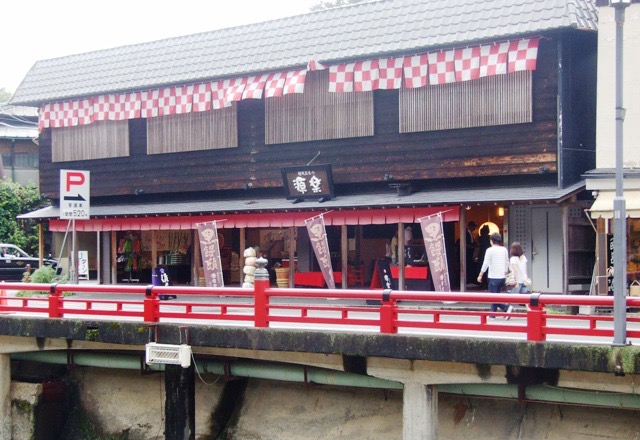

伊豆市の東に位置する中伊豆は美味しい水、美味しい空気、豊かな自然に恵まれており、わさびとしいたけの栽培が盛んです。中伊豆の農産物直売所「季多楽（きたら）」では地元の特産品を販売する他、田舎体験の情報を発信するなど、グリーンツーリズムの拠点にもなっています。
協賛紹介
伊豆市観光協会中伊豆支部
黒玉テラス
創業明治15年、伊豆の老舗銘菓といえば「出口の黒玉」。創業当初から代々受け継がれてきた黒玉は、その時の最高素材を厳選し、気温や湿度を肌で感じながら一粒一粒丁寧に作り上げます。ペットの入店可能なカフェ（黒玉テラス＆Dog）を展開しており、テラス席では天城ののどかな自然の中でわんちゃんと一緒にお食事ができます。協賛品として、今大会参加者全員にお配りする、プレミアム黒玉（黒玉テラス および インターネット通販限定販売）を頂きました。体に優しいお砂糖「素炊糖」を使用した極上仕上げの黒玉です。
小戸橋製菓
静岡県内に3店舗を展開する老舗菓子店。2022年で創業110周年を迎えました。伊豆のお土産として昭和初期に生まれた「猪最中」や、自家製餡子に合うバターを選んで使用した「バタどら」、丹那牛乳をたっぷり使用した「丹那のうまいプリン」を始め、和菓子だけでなく洋菓子も取り揃えています。特に、十勝産小豆を直火で5時間丁寧に練り上げた風味の深い餡子は絶品です。公式インスタグラムでは季節を感じるお菓子をたくさん紹介しています。協賛品として、今大会入賞景品の「猪最中」を頂きました。
月ヶ瀬梅組合
6.2haにわたって広がる月ヶ瀬梅林は伊豆市の二大梅林のひとつとして知られています。1500本の梅の花のジュータンとその後ろに控える天城連山とのコントラストは見事です。この梅林で収穫した梅は、梅シロップ、梅干、梅ジャムに加工され、近隣土産物店、スーパー等で販売される他、毎年収穫期の6月には観光梅狩りが行われます。また、2月27日～3月13日は3年ぶりに梅まつりが開催されます。協賛品として、今大会入賞景品の「梅ドロップ」を頂きました。サクマドロップスで知られるサクマ製菓とのコラボ商品で、梅シロップが使用されています。
東京ラスク
伊豆半島の中央に位置し、文豪たちに愛された自然の中に東京ラスク伊豆ファクトリーがあります。直売店からはラスクを製造しているところが見学できます。東京ラスクはラスクのイメージを変えてしまうほど、ソフトでサクサクっとした食感が特徴的。工場直売店ならではのお得な「ふぞろいラスク」や、地元のわさびを使用したここでしか買えない「わさびラスク」は、伊豆店のおすすめ商品です。また、昨年10月に新たにオープンしたチョコレート専門店では、全12フレーバーのマカダミアナッツ入りショコラボールを販売しています。協賛品として、ラスク詰め合わせを頂きました。今大会入賞景品となります。
百笑の湯

百笑の湯は完全源泉掛け流しの大浴場、血流促進効果のある炭酸泉からサウナまで、バリエーション豊富な温泉が揃った大規模な温泉施設です。また、仮眠室やお食事処、リラクゼーション施設なども設けられており、広々とした館内でゆっくりとくつろげます。「本大会に参加した」と口頭で伝えれば温泉の利用料金を10%引きしていただけます。お帰りの際にはぜひお立ち寄りください。
ニチレイ
饅頭総本山源楽

饅頭総本山源楽 HP
修禅寺門前にあるお饅頭の専門店です。毎日、蒸したて出来立てが箱詰めされ店頭に並ぶため、買ったばかりのお饅頭の箱は手を当てるとほんのり温かいです。修善寺名物として絶大な人気を誇るのは生地も餡も真っ黒な源楽胡麻饅頭。竹炭が練りこまれたしっとり艶やかな皮と、黒胡麻餡の上品な甘さが特徴です。その他、修善寺の特産品である黒米を使用した和菓子なども扱っています。協賛品として焼き菓子の「夢うさぎ」をいただきました。今大会入賞景品となります。